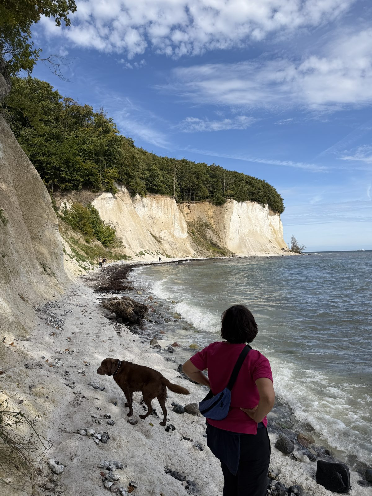
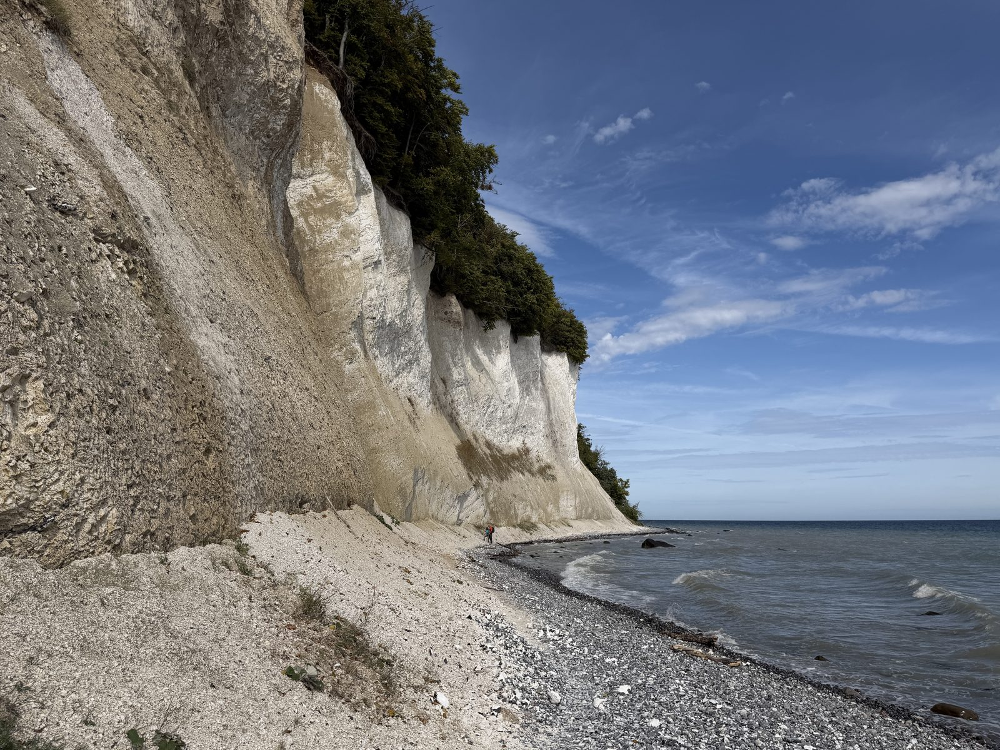
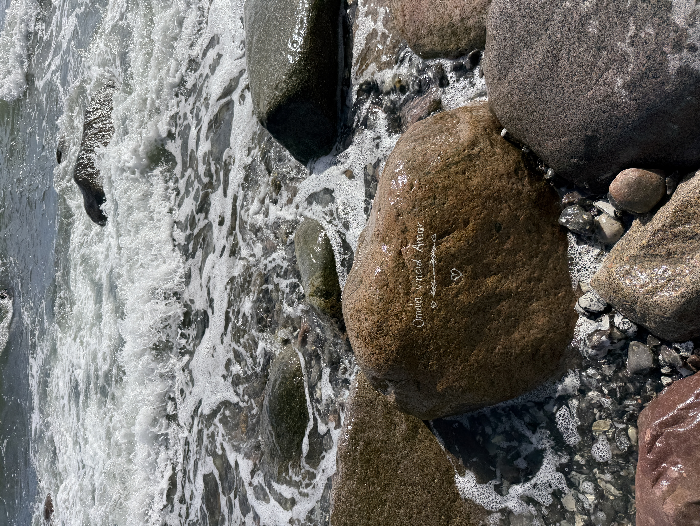
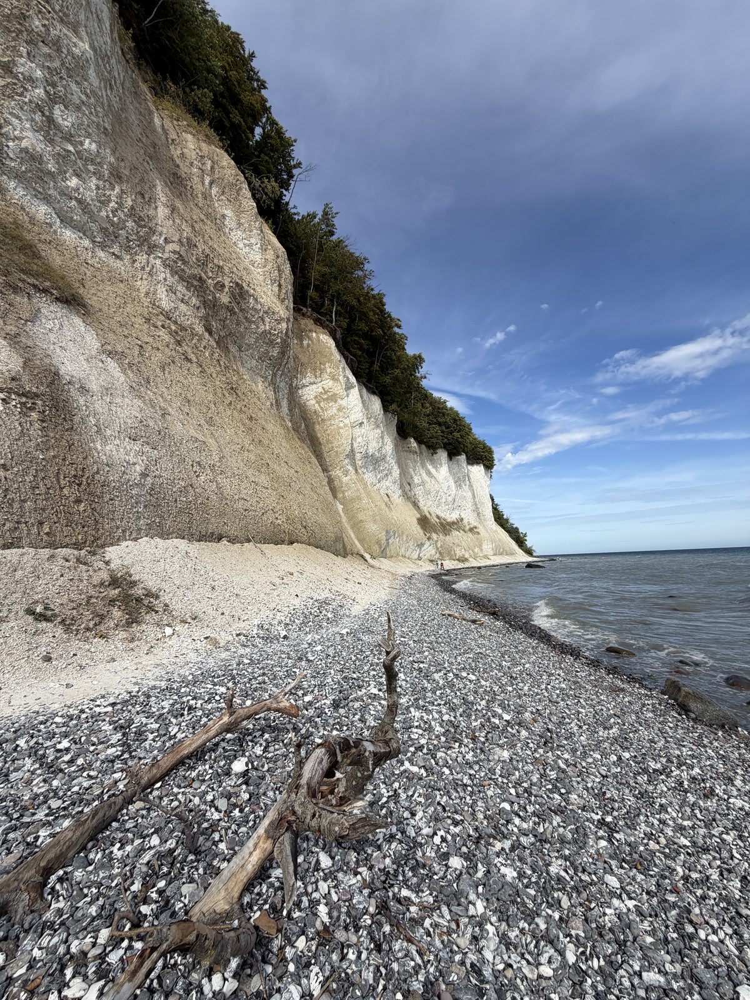

7. September 2026
Kreidefelsen


Das waren die Kreidefelsen – auf den Fotos beeindruckend zu sehen. Knapp 20 Meter hoch, komplett aus Kreide, und es war schon ein entspanntes Gefühl, daran vorbeizulaufen. An manchen Stellen sind wir lieber zügig weitergegangen, falls oben etwas abbröckelt. Wirklich sehr empfehlenswert, und wir hatten dazu auch noch tolles Wetter. Eine wunderschöne Ecke.
Ein kleiner Fakt am Rande: Die weiße Kreide besteht aus den Kalkschalen winziger Algen, die vor rund 70 Millionen Jahren in einem warmen Flachmeer lebten. Und die Küste bewegt sich bis heute – bei den nahegelegenen Wissower Klinken rutschten 2005 über Nacht rund 50.000 Kubikmeter Kreide ins Meer. Kein Wunder also, dass man an manchen Stellen lieber etwas zügiger weiterläuft.

